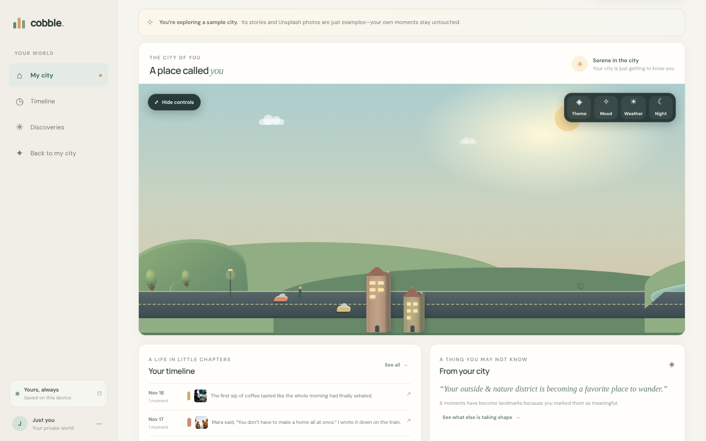
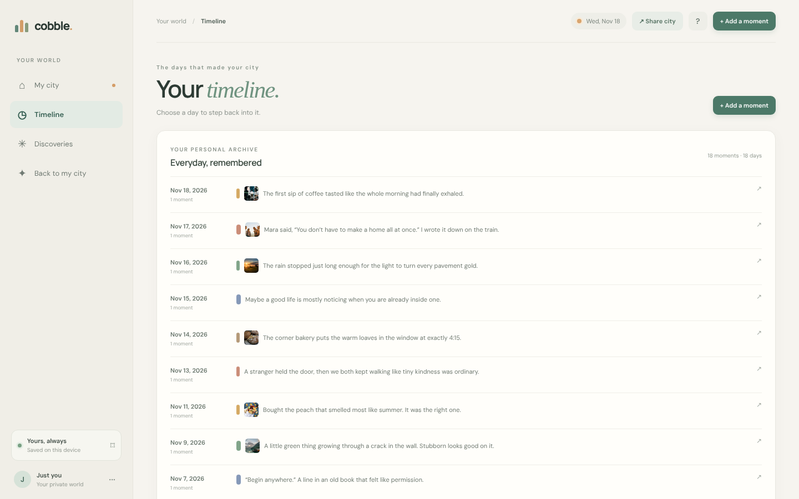
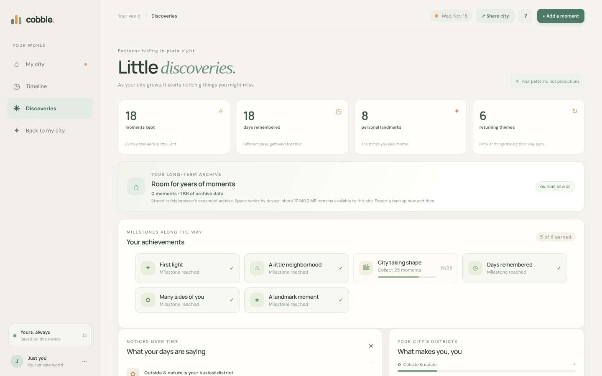
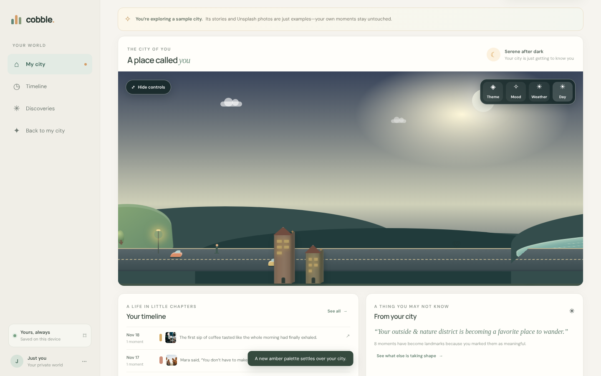
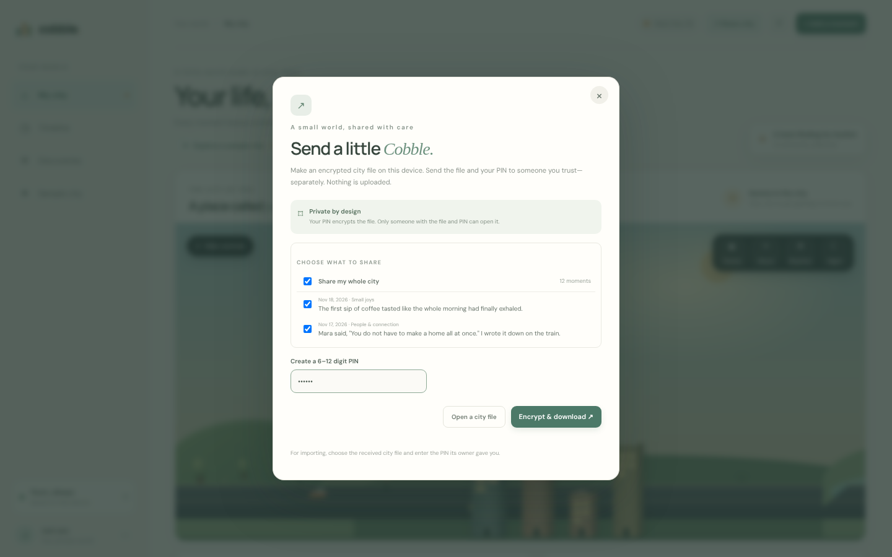
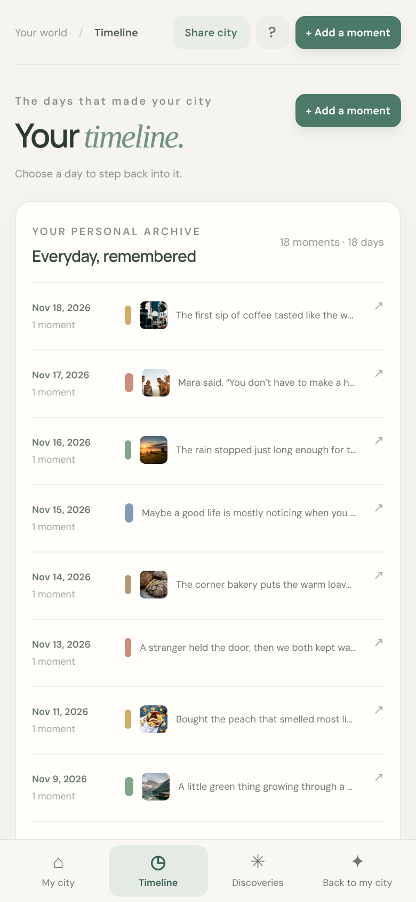

Height is meaning
Mark a moment as a small detail, something that mattered, or a landmark. Landmarks stand taller. Over months, the skyline becomes a map of what you actually cared about — not what you meant to.
A private city of your own days
Cobble turns the small things you notice into a city you build one day at a time. Save a moment — the warm loaf in the window, a sentence someone said, the light on wet pavement — and a building appears. Keep going, and your ordinary life starts to look like a place.
Every block is a moment you kept. Colour is what kind of moment it was. To cobble is to make a thing from whatever is at hand.
Cobble is not a journal with a nicer font. It is a small model of a city where the geometry means something, so you can read a year at a glance instead of scrolling through it.
Mark a moment as a small detail, something that mattered, or a landmark. Landmarks stand taller. Over months, the skyline becomes a map of what you actually cared about — not what you meant to.
Every moment files itself under one of six districts — everyday detail, people, outside, ideas, small joys, something meaningful. Districts cluster together, so the city shows where your attention keeps going.
If the same thing keeps happening — the 4:15 loaves, the old dog on Maple Street — say so. Returning themes get wider buildings and more windows, and Cobble starts naming them back to you.
Pick a district. A block appears, exactly as it would in your own city. Six presses and it already looks like somewhere.
0 moments in this block of the city
The categories are deliberately loose. Nothing here asks you to rate your day out of ten.
The bakery's 4:15 loaves. The bus driver who waited. Small machinery of a normal day.
What someone said on a train. A door held. Dinner where the candle went out.
Pavement turned gold after rain. A green thing through a crack in the wall.
The line in the old book that felt like permission. The thing you keep circling.
The peach that smelled most like summer. A song from when you were seventeen.
First dinner at the new table. The day the neighbourhood started to feel like yours.
Real captures of this repository, at 1440×900 and on a phone. The sample city is built into the app — nothing you see here is a mock-up.






There is no Cobble account, because there is no Cobble server. Your archive lives in your browser's own storage. The only thing that ever travels is a file you encrypt yourself.
Moments are saved in IndexedDB, with a localStorage fallback if the browser refuses. Photos are resized on the device before they are stored. Nothing is uploaded, ever.
Sharing produces a .cobble file: AES-256-GCM, key derived from your 6–12 digit PIN with PBKDF2-SHA-256 at 250,000 iterations. Send the file and the PIN separately.
No analytics, no cookies, no fonts tracking you, no third-party scripts on your data. The page asks for nothing but a browser with storage and Web Crypto.
Clearing site data clears the city. Export a backup before you clear a browser — and keep the file somewhere you trust.
Read the detail: privacy & security · the data model
Free, offline, accountless — and staying that way. Nothing is gated behind it.

drsohilboi@ybl
 Scan with any UPI app
Scan with any UPI app